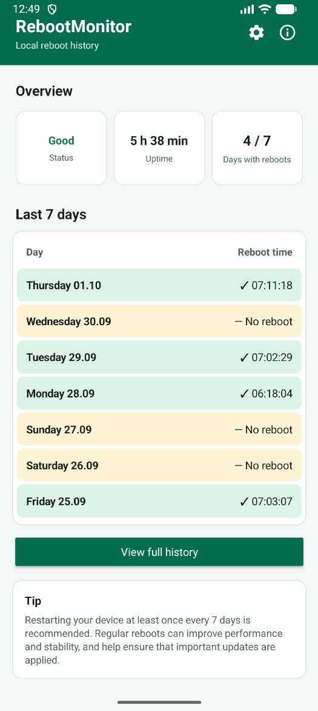
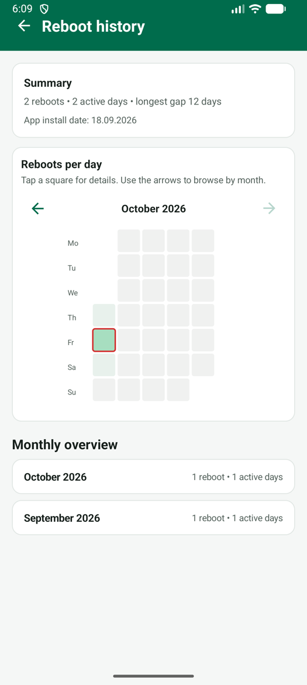

Uptime is easy to lose track of
Android doesn't put uptime anywhere a normal user will find it, so devices quietly keep running for weeks.
Checking uptime the "official" way means digging into Settings, enabling Developer options, or connecting a computer with ADB. Nobody does that for a phone or tablet they use every day — and on a device nobody personally owns, nobody does it at all.
RebootMonitor puts that number front and center: current uptime, updated live, the moment you open the app.
Live uptime counter
Days, hours and minutes since the last restart, calculated straight from the system clock.
Color-coded status
"Good" or "Reboot recommended" at a glance, based on how long the device has been up.
History, not just a snapshot
A 7-day overview plus 30-day, 90-day and 12-month views of every recorded restart.
Monthly heatmap
Tap any day in the calendar to see exactly when the device restarted that day.
What the uptime screen actually shows
Three numbers, one table — no configuration required.


Why uptime is worth watching
- Pending Android system and security updates often only apply after a restart.
- Long uptimes correlate with slower, less responsive devices as memory and cached processes build up.
- A device that never restarts is a device where nobody is checking on it — which is exactly when problems go unnoticed.
Monitoring that stays on the device
- Uptime and reboot history are calculated and stored locally. Nothing is uploaded anywhere.
- Only two permissions:
RECEIVE_BOOT_COMPLETEDandPOST_NOTIFICATIONS. - No account, no ads, no analytics — the app has nothing to gain from your data.
Frequently asked questions
What exactly does RebootMonitor mean by "uptime"?
The time elapsed since the device's last restart, read directly from the Android system clock. It resets to zero every time the device actually reboots.
Does uptime tracking work without an internet connection?
Yes. RebootMonitor never requests internet access. Uptime and reboot history are calculated and stored entirely on the device.
Can I see uptime trends over time, not just right now?
Yes. Alongside the live uptime counter, the history screen shows a 30/90-day or 12-month view and a monthly heatmap of reboot activity.
Is this a fleet-wide monitoring dashboard?
No. RebootMonitor shows uptime on the device itself, for whoever is looking at it right now. There is no central server or cross-device dashboard, by design — see our Intune shared device monitoring page for how that works in practice on managed fleets.
See your device's uptime right now
Install RebootMonitor and the current uptime is the first thing you'll see.